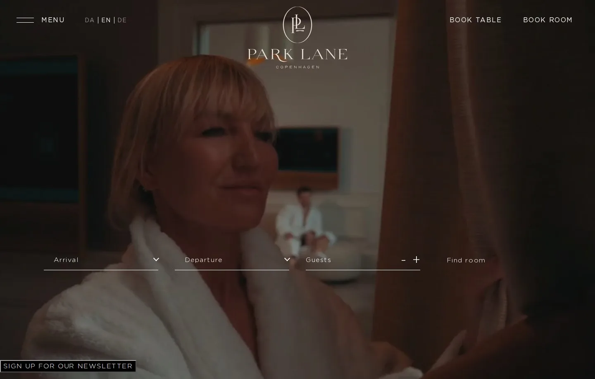
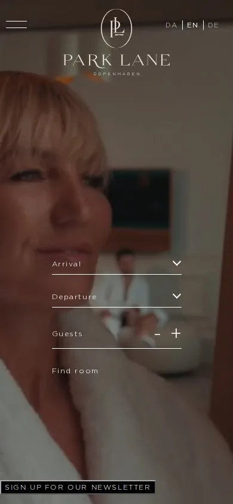
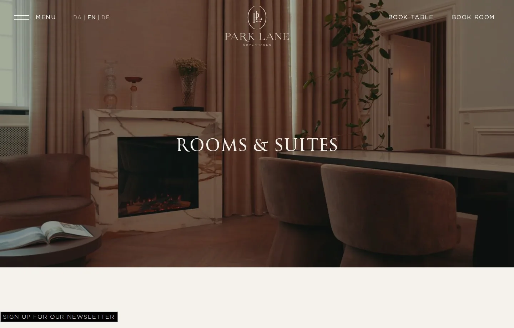

Hospitality & Stays / Live website study
Boutique hospitality with considered details.
A Copenhagen hotel site combining refined interiors, room discovery and dining information in a restrained visual experience.
This is a review of a publicly accessible website, using genuine page captures. It does not claim project authorship, client affiliation, or unverified business outcomes.
01 / Real page captures
The experience on two screens.
Both views were captured directly from the accessible live site and show its desktop and mobile presentation at the time of review.


02 / Design observations
The journey behind the visuals.
Park Lane brings accommodations, food and local context together while retaining a clear sense of the hotel's identity.
03 / Interior page
Beyond the opening screen.
Rooms and Suites presents accommodation choices with enough detail to make comparing stays easier.

Continue exploring
See websites from other industries.
Browse more verified live website references and learn from the differences in how visitors are guided.